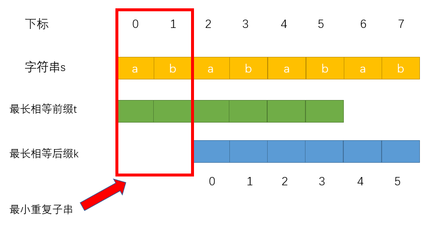

数组 二分查找
二分查找的使用场景：有序数组、无重复元素（一旦有重复，返回的元素下标可能就不唯一）
区间的定义： 二分查找一个重要的点就是对于查找区间的定义，是左闭右闭还是左闭右开。并且在查找过程中，区间的定义要保持不变
区间的定义会涉及到在二分过程中的一些细节，例如while(left < right)还是while(left <= right)、是right = middle还是right = middle - 1
左闭右闭的版本 在左闭右闭时：
while(left <= right)中的等号是可以取到的当目标元素落在左半边区间时，因为区间右边是取得到的，且已经判断目标元素小于右边界，所以right = middle - 1
1 2 3 4 5 6 7 8 9 10 11 12 13 14 15 16 17 18 19 20 21 22 function search (arr, target ) { let left = 0 let right = arr.length - 1 let middle = Math .floor ((left + right)/2 ) while (left <= right) { if (arr[middle] > target) { right = middle - 1 } else if (arr[middle] < target) { left = middle + 1 } else { return middle } } return -1 }
左闭右开的版本 在左闭右开时：
在while循环时，显然left不可能有等于right的情况
当目标元素落在左半边区间时，因为右边界是开区间，right = middle是正好的，如果是right =middle - 1反而会漏掉右边界的前一个元素
1 2 3 4 5 6 7 8 9 10 11 12 13 14 15 16 17 18 19 20 21 22 function search (arr, target ) { let left = 0 let right = arr.length - 1 let middle = Math .floor ((left + right)/2 ) while (left < right) { if (arr[middle] > target) { right = middle } else if (arr[middle] < target) { left = middle + 1 } else { return middle } } return -1 }
数组的双指针法
本题的一种方法是暴力解法，使用两个for循环，一个for遍历数组，一个for更新数组。这种方法的时间复杂度是O(n^2)
场景一 双指针法
双指针法就是定义两个指针，在一个for循环中完成两个for循环的事情。
fast指针：它用来查找数组中的元素是否等于目标元素
slow指针：它用于更新数组
1 2 3 4 5 6 7 8 9 10 11 12 13 14 function removeElement (arr, target ) { let slow = 0 let len = arr.length for (let fast = 0 ; fast < len; fast++) { if (arr[fast] != target) { arr[slow++] = arr[fast] } } return slow }
场景二
给你一个按 非递减顺序 排序的整数数组 nums，返回 每个数字的平方 组成的新数组，要求也按 非递减顺序 排序。
分析：由于它也算是一个有序的数组，可以发现较大值只可能出现在头和尾，中间一定是较小值
思路：可以定义两个指针，一个在数组的开始，一个在数组的结尾。比较两个指针所在元素平方后的大小，较大的元素放到一个新数组的末尾，然后较大元素所在的指针向前或后移动，直至两指针相遇
1 2 3 4 5 6 7 8 9 10 11 12 13 14 15 16 17 18 19 20 function sortedSquares (arr ) { let start = 0 let end = arr.length - 1 let newArr = new Array (arr.length ) let k = arr.length - 1 while (start <= end) { if (arr[start] * arr[start] < arr[end] * arr[end]) { newArr[k--] = arr[end] * arr[end] end-- } else { newArr[k--] = arr[start] * arr[start] start++ } } return newArr }
场景三
给你一个整数数组 nums ，判断是否存在三元组 [nums[i], nums[j], nums[k]] 满足 i != j、i != k 且 j != k ，同时还满足 nums[i] + nums[j] + nums[k] == 0 。请你返回所有和为 0 且不重复的三元组。
本题的难点在于去重
思路：
首先对数组进行升序排序，方便之后的操作，如果排序后的数组的第一个元素就大于0，那么这个数组就不存在三数和为0
进行一次for循环，i从数组的第一个元素开始，同时定义两个指针，left指针指向i+1，right指针指向数组末尾
然后依次在数组中寻找三数和为0的情况
如果发现三数和大于0，那么right指针前移；如果三数和小于0，那么left指针后移，同时保持left < right
去重操作：
去重主要考虑nums[i]、nums[left]、nums[right]
如果nums[i]重复了，就很有可能导致最后的三元组发生重复，所以要判断nums[i] === nums[i-1]
left重复时，直接left++，跳过重复的元素；同理right重复时，right–，跳过重复的元素
1 2 3 4 5 6 7 8 9 10 11 12 13 14 15 16 17 18 19 20 21 22 23 24 25 26 27 28 29 30 31 32 function ThreeSumArr (nums ) { let res = [] let len = nums.length nums.sort ((a, b ) => a - b) for (let i = 0 ; i < len; i++) { let left = i + 1 , right = len - 1 let iNum = nums[i] if (iNum > 0 ) return res if (iNum == nums[i-1 ]) continue while (left < right) { let lNum = nums[left], rNum = nums[right] let sum = lNum + rNum + iNum if (sum < 0 ) left++ else if (sum > 0 ) right-- else { res.push ([iNum, lNum, rNum]) while (left < rNum && nums[left] === nums[left+1 ]) { left++ } while (left < right && nums[right] === nums[right-1 ]) { right-- } left++ right-- } } } return res }
螺旋矩阵
给定一个正整数 n，生成一个包含 1 到 n^2 所有元素，且元素按顺时针顺序螺旋排列的正方形矩阵。
这道题并没有考察什么特定的算法，就是一个矩阵的模拟过程
最重要的一点： 循环不变量 是一个很重要的点
先填入1-3所在的位置，此时走的是[1, 3]
然后填入4-5所在的位置，此时走的是(3, 5]
然后填入6-7所在的位置，此时走的是(5, 7]
然后填入8所在的位置，此时走的是(7, 8]
可以发现，由于没有控制好对于每个角落位置的归属问题，导致了程序很复杂
确定循环不变量： 我们就规定每一行或列都是左闭右开的形式，也就是说将这一行（或列）最后的位置作为下一列（或行）的起始位置
1 2 3 4 5 6 7 8 9 10 11 12 13 14 15 16 17 18 19 20 21 22 23 24 25 26 27 28 29 30 31 32 33 34 function generateMatrix (n ) { let startX = 0 ,startY = 0 let loop = Math .floor (n/2 ) let mid = Math .floor (n/2 ) let offset = 1 let count = 1 let res = new Array (n).fill (0 ).map (() => new Array (n).fill (0 )) while (loop--) { let row = startX, col = startY for (;col < n - offset; col++) { res[row][col] = count++ } for (;row < n - offset; row++) { res[row][col] = count++ } for (; col > startY; col--) { res[row][col] = count++ } for (; row > startX; row--) { res[row][col] = count++ } startX++ startY++ offset++ } if (n % 2 === 1 ) { res[mid][mid] = count } return res }
哈希表 两数之和
给定一个整数数组 nums 和一个整数目标值 target，请你在该数组中找出 和为目标值 target 的那 两个 整数，并返回它们的数组下标。
首先，可以直接用两个for循环暴力操作，时间复杂度为O(n^2)
这个题目可以使用哈希法 来操作但是需要想清楚以下几个问题：
什么时候使用哈希表
为什么要使用哈希表来做
用数组、set还是map来实现哈希表
如果使用map，其中的key、value又是什么
什么时候使用哈希表：当我们要查询一个元素是否出现过，或者一个元素是否在集合中出现，要想到使用哈希表
对于本题来说，我们需要记录已经查询过的元素，并且要使用到元素的值以及下标，所以set显然不合适。而数组的大小受限，当哈希值较大数据较少时，会浪费空间。综上所述，本题我们使用map来实现哈希表，key为元素值。value为元素下标
1 2 3 4 5 6 7 8 9 10 function twoSum (nums, target ) { let hash = {} for (let i = 0 ; i < nums.length ; i++) { if (hash[target - nums[i]] !== undefined ) { return [i, hash[target - nums[i]]] } hash[[nums[i]]] = i } return [] }
四数相加
给定四个包含整数的数组列表 A , B , C , D ,计算有多少个元组 (i, j, k, l) ，使得 A[i] + B[j] + C[k] + D[l] = 0。
思路：
显然可以使用map来实现哈希表
先遍历A，B两个数组，统计两个数组的元素之和，以及每个和出现的次数
再遍历C，D两个数组，找到如果0-(c+d)在map中出现过的话，就用count把map中key对于的value（也就是出现的次数）统计起来
1 2 3 4 5 6 7 8 9 10 11 12 13 14 15 16 17 18 function fourSumCount (arr1, arr2, arr3, arr4 ) { let hash = new Map () let count = 0 for (let i = 0 ; i < arr1.length ; i++) { for (let j = 0 ; j < arr2.length ; j++) { let sum = arr1[i] + arr2[j] hash.set (sum, (hash.get (sum) || 0 ) + 1 ) } } for (let i = 0 ; i < arr3.length ; i++) { for (let j = 0 ; j < arr4.length ; j++) { let val = 0 - (arr3[i]+arr4[j]) count += hash.get (val) || 0 } } return count }
字符串 反转字符串
给定一个字符串 s 和一个整数 k，从字符串开头算起, 每计数至 2k 个字符，就反转这 2k 个字符中的前 k 个字符。
我的思路：大致就是不断地从原字符串上按照三种可能的情况进行截取（直接将截取的子字符串从原字符串上删除，保证每次从头开始判断）然后进行反转操作（借鉴vue3中ast模板语法树解析html模板的思路）
后来在代码随想录上看到了一种更优雅的解法和思路:
循环已 i = 2*k 的区间处理，在循环中判断此次循环是2k个、k到2k之间或不足k个
使用ES6的数组解构语法来交换两值达到反转的效果
1 2 3 4 5 6 7 8 9 10 11 function reverseString (str, k ) { let len = str.length let res = str.split ('' ) for (let i = 0 ; i < len; i += 2 *k) { let l = i - 1 let r = i + k > len ? len : i + k while (++l < --r) [res[l], res[r]] = [res[r], res[l]] } return res.join ('' ) }
翻转字符串中的单词
给定一个字符串，逐个翻转字符串中的每个单词。去除字符串开头和结尾的空格，且单词之间的重复空格要减少到一个
示例 1：输入: “the sky is blue” 输出: “blue is sky the”
使用库函数的解法：使用trim去除开头结尾的空格，然后split分割字符串，最后再将单词顺序反转就可以
1 2 3 4 5 6 7 8 9 10 11 12 13 14 function reverse (s ) { s = s.trim () let arr = s.split (' ' ) let newArr = [] for (let i = 0 ; i < arr.length ; i++) { if (arr[i] != '' ) { newArr.push (arr[i]) } } let l = -1 , r = newArr.length while (++l < --r) [newArr[l], newArr[r]] = [newArr[r], newArr[l]] return newArr.join (' ' ) }
难度提升： 要求要在原字符串上操作，不能使用辅助空间，保证空间复杂度为O(1)
解题思路：
去除多余字空格的思路：双指针法
开头的空格：快指针直接++跳过，慢指针不动，知道跳过全部的开头空格，将快指针所在的值赋值给i=0处（慢指针所在位置）
中间多余的空格：快指针判断到第一个空格不会跳过，判断到多余空格时跳过
结尾的空格：直接修改数组的长度来去除结尾空格
1 2 3 4 5 6 7 8 9 10 11 12 13 14 15 16 17 18 19 20 21 22 23 24 25 26 27 28 29 30 31 32 33 34 35 36 37 38 39 40 41 42 43 44 45 46 47 48 49 function removeExtraSpace (s ) { if (s.length == 0 ) return s let slow = 0 , fast = 0 while (s[fast] == ' ' && fast < s.length ) { fast++ } while (fast < s.length ) { if (s[fast] == s[fast - 1 ] && s[fast] == ' ' ) { fast++ }else { s[slow++] = s[fast++] } } s.length = s[slow-1 ] == ' ' ? slow-1 : slow } function reverse (str, start, end ) { let left = start, right = end while (left < right) { [str[left], str[right]] = [str[right], str[left]] left++ right-- } return str } function reverseWords (s ) { s = Array .from (s) removeExtraSpace (s) reverse (s, 0 , s.length -1 ) let start = 0 for (let i = 0 ; i <= s.length ; i++) { if (s[i] == ' ' || i == s.length ) { reverse (s, start, i-1 ) start = i + 1 } } return s.join ('' ) }
KMP算法
给定一个 haystack 字符串和一个 needle 字符串，在 haystack 字符串中找出 needle 字符串出现的第一个位置 (从0开始)。如果不存在，则返回 -1。
主要思想
next数组
前缀：不包含最后一个字符的所有以第一个字符开头的连续子串
前缀表要求的就是相同前后缀的长度
例如下图中下标为5的字符之前的字符串（aabaa）中的最长相同前后缀 是 aa，匹配失败的位置是后缀子串的后面，那么我们可以找到与其相同的前缀的后面一个字符重新匹配就可以了
计算前缀表的方法
长度为 开头字符a 的子串，显然没有相同前后缀，所以为0
长度为 aa 的子串，有着最长相同前后缀 a，所以为1
长度为 aab 的子串，没有相同前后缀，所以为0
长度为 aaba 的子串，有着最长相同前后缀 a，所以为1
长度为 aabaa 的子串，有着最长相同前后缀 aa，所以为2
长度为 aabaaf 的子串，没有相同前后缀，所以为0
前缀表表示对应下标i之前（包括i）的字符串中，有多大长度的相同前后缀
利用前缀表找到回退的位置
构建next数组 构建next数组就是计算模式串前缀表的过程：
初始化next数组
处理前后缀相同时的情况
处理前后缀不同时的情况
初始化 next[0] = 0next[i] 表示i位置之前（包括i）的最长相同前后缀长度，也就是j
前后缀相同的情况 j的值赋值给next[i]，记录相同前后缀的长度
前后缀不同的情况 j就需要向前回退，因为next数组记录的就是j之前子串的最长相同前后缀长度
代码实现
1 2 3 4 5 6 7 8 9 10 11 12 13 14 15 16 function getNext (needle ) { let next = [] let j = 0 next.push (j) for (let i = 1 ; i < needle.length ; i++) { while (j > 0 && needle[j] !== needle[i]) { j = next[j-1 ] } if (needle[j] === needle[i]) j++ next.push (j) } return next }
完整代码 在主串中寻找是否出现过模式串，定义两个指针j指向模式串的起始位置，i指向主串的起始位置
如果haystack[i] === needle[j]，那就i、j同时向后移haystack[i] !== needle[j]，那j就要从next数组中寻找下一个匹配的位置
如何判断主串中有模式串： j指向了模式串的末尾，说明模式串完全匹配主串中的某一子串
1 2 3 4 5 6 7 8 9 10 11 12 13 14 15 16 17 18 19 20 21 22 23 24 25 26 27 28 29 30 31 32 33 function getNext (needle ) { let next = [] let j = 0 next.push (j) for (let i = 1 ; i < needle.length ; i++) { while (j > 0 && needle[j] !== needle[i]) { j = next[j-1 ] } if (needle[j] === needle[i]) j++ next.push (j) } return next } function KMP (haystack, needle ) { if (needle.length === 0 ) return 0 let next = getNext (needle) let j = 0 for (let i = 0 ; i < haystack.length ; i++) { while (j > 0 && haystack[i] !== needle[j]) { j = next[j-1 ] } if (haystack[i] === needle[j]) j++ if (j === needle.length ) return ( i - needle.length + 1 ) } return -1 }
时间复杂度： O(m*n)O(m)，匹配主串需要时间复杂度O(n)，所以KMP所需的时间复杂度是O(m+n)
重复子字符串
给定一个非空的字符串，判断它是否可以由它的一个子串重复多次构成。给定的字符串只含有小写英文字母，并且长度不超过10000。
KMP最擅长的就是在一个字符串中查找某个字符串，而重复子字符串又与最长相同前后缀有关系
先上结论：在由重复子串组成的字符串中，最长相同前后缀不包含的子串就是最小重复子串
例如：字符串 abababab ，ab就是它的最小重复子串，如图所示：

如何确认这是最小重复子串？
推导：
因为是最长相同前后缀，所以有 t[0] = k[0] 、t[1] = k[1]，对应到字符串s上就是 s[0]s[1] = s[2]s[3]
t[2] = k[2] 、t[3] = k[3]，对应到字符串s上就是 s[2]s[3] = s[4]s[5]依次循环，字符串s，s[0]s[1]与s[2]s[3]相同， s[2]s[3] 与 s[4]s[5]相同，s[4]s[5] 与 s[6]s[7] 相同
思路：
1 2 3 4 5 6 7 8 9 10 11 12 13 14 15 16 17 18 19 20 21 22 23 24 25 26 27 function getNext (needle ) { let next = [] let j = 0 next.push (j) for (let i = 1 ; i < needle.length ; i++) { while (j > 0 && needle[j] !== needle[i]) { j = next[j-1 ] } if (needle[j] === needle[i]) j++ next.push (j) } return next } let repeatedSubstringPattern = function (s ) { if (s.length === 0 ) return false ; let next = getNext (s); if (next[next.length - 1 ] !== 0 && s.length % (s.length - next[next.length - 1 ])=== 0 ) return true ; return false ; };
栈和队列 单调队列
给定一个数组 nums，有一个大小为 k 的滑动窗口从数组的最左侧移动到数组的最右侧。你只可以看到在滑动窗口内的 k 个数字。滑动窗口每次只向右移动一位。返回滑动窗口中的最大值。
思路：
窗口的每次移动都会在窗口的左边移出一个元素，右边移入一个元素，类似于队列的操作
所以我们可以想到可以构建一个队列，他有三个方法，从队尾入元素、从队头出元素、返回队列中最大值
问题在于：如何找到队列中最大值（直接for遍历寻找的话，和暴力做法无异），想到可以将队列排序，但是你无法保证排序之后，滑动窗口要移动的元素就是队头元素
关键： 其实队列中没有必要维护窗口中所有的元素，只需要维护有可能成为窗口中最大值的元素就可以了，同时保证队列中的元素数值由大到小排列
这个维护元素单调递减的队列就叫做单调队列
enqueue入队方法
dequeue出队方法
front返回队头元素
1 2 3 4 5 6 7 8 9 10 11 12 13 14 15 16 17 18 19 20 21 22 23 24 25 26 27 28 29 30 31 32 33 34 35 36 37 38 39 40 41 42 43 44 45 46 47 class MonoQueue { queue; constructor ( this .queue = [] } enqueue (value ) { let back = this .queue [this .queue .length - 1 ] while (back !== undefined && back < value) { this .queue .pop () back = this .queue [this .queue .length - 1 ] } this .queue .push (value) } dequeue (value ) { let front = this .front () if (front == value) { this .queue .shift () } } front ( return this .queue [0 ] } } function maxSlidingWindow (nums, k ) { let helperQueue = new MonoQueue () let j = 0 let res = [] while (j < k) { helperQueue.enqueue (nums[j++]) } res.push (helperQueue.front ()) while (j < nums.length ) { helperQueue.dequeue (nums[j - k]) helperQueue.enqueue (nums[j]) res.push (helperQueue.front ()) j++ } return res }
二叉树 二叉树的遍历主要有两种：
深度优先遍历主要分为： 先序遍历（递归法、迭代法）、中序遍历（递归法、迭代法）、后序遍历（递归法、迭代法）广度优先遍历主要是 层序遍历
二叉树的递归遍历 在写递归时要弄清楚以下几点：
确定递归函数的参数和返回值，进而可以确定递归函数的返回类型
确定终止条件，否则会导致栈溢出
确定单层递归逻辑
递归的实现就是：每一次递归调用都会把函数的局部变量、参数值和返回值等压入调用栈中 ，然后递归返回的时候，从栈顶弹出上一次递归的各项参数，这就是为什么递归可以返回上一层位置的原因
下面是二叉树的前中后序遍历：
1 2 3 4 5 6 7 8 9 10 11 12 13 14 15 16 17 18 19 20 21 22 23 24 25 26 27 28 29 30 31 32 33 34 35 36 37 38 39 40 41 42 43 44 45 46 class TreeNode { val; left; right; constructor (val, left, right ) { this .val = ( val == undefined ? 0 : val ) this .left = ( left == undefined ? 0 : left ) this .right = ( right == undefined ? 0 : right ) } } function preorderTraversal (root ) { let res = [] const dfs = function (r ) { if (r == null ) return ; res.push (r.val ) dfs (r.left ) dfs (r.right ) } dfs (root) return res } function inorderTraversal (root ) { let res = [] const dfs = function (r ) { if (r == null ) return dfs (r.left ) res.push (r.val ) dfs (r.right ) } dfs (root) return res } function postorderTraversal (root ) { let res = [] const dfs = function (r ) { if (r == null ) return dfs (r.left ) dfs (r.right ) res.push (r.val ) } }
二叉树的迭代遍历 迭代遍历用到了 栈 结构
先序遍历 注意： 由于栈的先进后出特性，要先入栈右孩子，再入栈左孩子）
1 2 3 4 5 6 7 8 9 10 11 12 13 14 15 function preorderTraversal (root ) { let res = [] let stack = [] if (root == null ) return res; stack.push (root) while (stack.length != 0 ) { let node = stack.pop () res.push (node.val ) if (node.right ) stack.push (node.right ) if (node.left ) stack.push (node.left ) } return res }
后序遍历
先序遍历是中左右 –> （将代码左右孩子入栈顺序对调）–> 中右左 –> （反装结果集）–> 左右中 –> 后序遍历是左右中
1 2 3 4 5 6 7 8 9 10 11 12 13 14 15 16 17 function preorderTraversal (root ) { let res = [] let stack = [] if (root == null ) return res; stack.push (root) while (stack.length != 0 ) { let node = stack.pop () res.push (node.val ) if (node.left ) stack.push (node.left ) if (node.right ) stack.push (node.right ) } let l = -1 , r = res.length while (++l < --r) [res[l], res[r]] = [res[r], res[l]] return res }
中序遍历
先序遍历的访问顺序是中左右，先访问中间节点，处理元素也是中间节点
中序遍历的访问顺序是左中右，先访问的是根节点，但是要一层层向下访问左子树，直到左子树的最底部，才开始处理节点，这就造成了访问顺序和处理顺序不同
1 2 3 4 5 6 7 8 9 10 11 12 13 14 15 16 17 18 function inorderTraversal (root ) { let res = [] let stack = [] let cur = root while (cur != null || stack.length != 0 ) { if (cur != null ) { stack.push (cur) cur = cur.left }else { cur = stack.pop () res.push (cur.val ) cur = cur.right } } return res }
二叉树的层序遍历 层序遍历一个二叉树就是从左到右一层一层的去遍历二叉树
1 2 3 4 5 6 7 8 9 10 11 12 13 14 15 16 17 18 19 20 function levelOrder (root ) { let res = [] let queue = [] if (root === null ) return res queue.push (root) while (queue.length !== 0 ) { let len = queue.length let curLevel = [] for (let i = 0 ; i < len; i++) { let node = queue.shift () curLevel.push (node.val ) if (node.left ) queue.push (node.left ) if (node.right ) queue.push (node.right ) } res.push (curLevel) } return res }
例题 对称二叉树
给定一个二叉树，检查它是否是镜像对称的。
首先要知道的是，对称二叉树要比较的不是左右节点，而是左右两子树
遍历方法的选取： 我们需要收集孩子节点比较的结果，然后返回给父节点，所以要使用后序遍历
递归
1 2 3 4 5 6 7 8 9 10 11 12 13 14 15 16 17 18 19 20 21 22 23 24 25 let compare = (left, right ) => { if (left == null && right == null ) return true else if (left == null && right != null ) return false else if (left != null && right == null ) return false else if (left.val !== right.val ) return false let outer = compare (left.left , right.right ) let inner = compare (left.right , right.left ) let isSame = outer && inner return isSame } let isSymmetric = (root ) => { if (root == null ) return true return compare (root.left , root.right ) }
迭代
1 2 3 4 5 6 7 8 9 10 11 12 13 14 15 16 17 18 19 20 21 22 23 24 25 26 let = isSymmetric = (root ) => { if (root == null ) return true let queue = [] queue.push (root.left ) queue.push (root.right ) while (queue.length != 0 ) { let leftNode = queue.shift () let rightNode = queue.shift () if (!leftNode && !rightNode) continue ; if (!leftNode || !rightNode || (leftNode.val != rightNode.val )) { return false } queue.push (leftNode.left ) queue.push (rightNode.right ) queue.push (leftNode.right ) queue.push (rightNode.left ) } return true }
最后 学习资源来自代码随想录